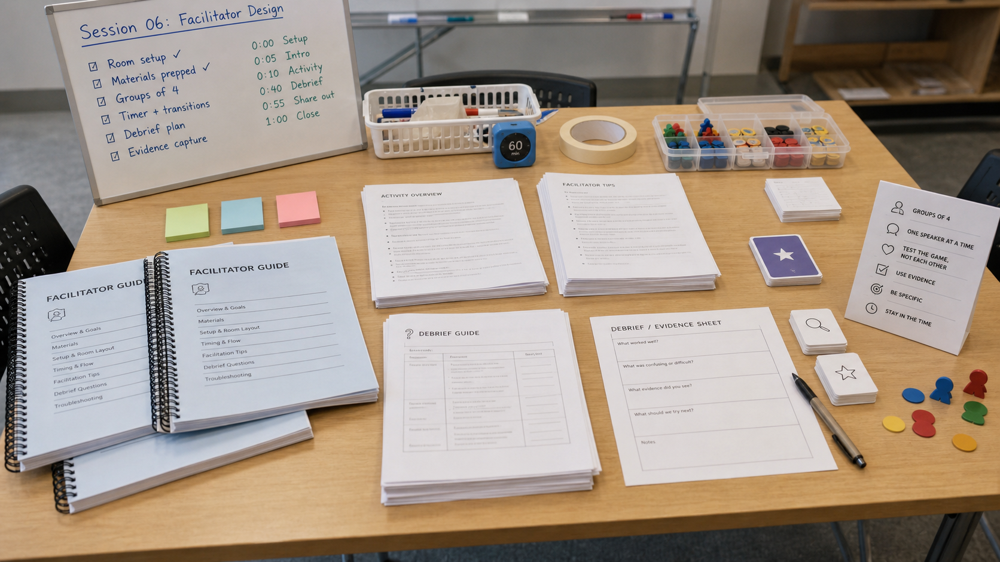

By the end of this session, you can…
- LO 6.1State the three non-negotiable sections of a facilitator guide and what each exists to prevent.
- LO 6.2Write opening, mid-play intervention, and debrief scripts that include specific words — not bullet points.
- LO 6.3Anticipate three failure modes a facilitator is likely to hit, and write the recovery line for each.
- LO 6.4Pass a table-read: your guide is read aloud by a peer who has not played your game, end to end, without stopping to ask you questions.
A colleague, cold, alone
Write for a facilitator who is competent, unfamiliar with your game, and forty-five minutes from needing to run it. They are on their phone in a parking lot. That is your reader. Every page of your guide has to survive that context.
The parking-lot test: a facilitator reading your guide forty-five minutes before
running it can deliver a competent session.
The table-read test: a peer, reading your guide aloud end to end, never needs to
stop and ask you a question.
Six sections. In this order.
| Section | Content | Prevents |
|---|---|---|
| 1. At-a-glance | One page. Who is this for, what will they learn, how long, what do you need in the room. Printable solo. | Facilitators running the wrong activity for the wrong audience. |
| 2. Setup & materials | Step-by-step room, device, and handout setup. Include photos. | Ten minutes lost at the start because the printer jammed. |
| 3. Opening script | The words the facilitator says to begin, verbatim. Then the transition to play. | Shaky openings; unclear goals; learners unsure whether this is evaluative. |
| 4. Play & interventions | Timeline with trigger → intervention pairs. "If X happens, say Y." Specific, not aspirational. | Facilitator improvises; teaches the wrong thing; loses the room. |
| 5. Debrief script | The three questions to ask, in order. Expected answers. Traps. Closing words. | Debrief becomes a vibe check; no transfer; no objective is nailed down. |
| 6. Common failures | Three to five likely failure modes with specific recovery lines. | Silent panic; facilitator power-fantasy improvisation. |

If you would not read it aloud, do not write it
The single most common guide failure is bullet-pointed shorthand. Bullets tell the author what they already know. They tell a stranger nothing. Write the opening, the interventions, and the debrief as actual language. The words your facilitator will say.
What NOT to write
• Welcome learners
• Explain objectives
• Set ground rules
• Start game
Four bullets, zero language. Two different facilitators will run four different sessions from this. The one who is nervous about public speaking will spend two minutes saying nothing.
From The On-Call facilitator guide, v0.3
"Welcome. For the next 45 minutes you are on the overnight medicine service. The intern's job is yours: decide who to see, what to order, when to call for help. You will not get everything right. That is how the game teaches. If you ever feel stuck, keep playing — the game will not deadlock. You will feel pressure. That is the point. Questions about the room or the rules, now. Questions about the medicine, hold until after. Timer starts when I step back from the screen."
Every sentence does a job. Framing. Permission to fail. Reassurance about deadlocks. Explicit question-banking rule. The facilitator has language for the moment where the room normally stalls.
Three failure modes, three recovery lines
| What happens | What you write |
|---|---|
| Player quits role after 5 minutes — treats it as a quiz. | "Stay in the ward. If you would not look it up on shift, do not look it up now. What is your leading diagnosis?" |
| Group fights over the right answer before finishing the scenario. | "Note your disagreement. We will resolve it in the debrief, not now. The clock does not stop." |
| A learner is clearly distressed by the content. | "Take five minutes. The session continues without you; you can rejoin the debrief." Plus: facilitator logs it, checks in after. |
Writing recovery lines is a forcing function. When you cannot write one, the failure mode is structural — go back and redesign the mechanic or the role. Do not paper over it in the guide.
Formatting a guide that survives the hallway
A facilitator guide is useless if it lives as an unformatted Google Doc. It needs to print to half-letter (5.5"×8.5"), stay legible in a classroom's ambient light, and let someone flip to a specific section mid-session without losing their place. Codex — OpenAI's code-generation environment — is the right tool for this. You describe the print stylesheet you want; it writes the CSS and the template. You review and refine.
Use case · Generate a print-ready HTML template for your guide
One-off codegen, not a long-lived codebaseYour facilitator guide has structure: timing ribbons, script blocks, recovery lines in a callout color, a materials checklist. Instead of fighting Google Docs to make that structure visible, write the guide in a single HTML file and let Codex produce the print CSS.
Generate a single-file HTML template for a facilitator guide that
prints to half-letter (5.5in × 8.5in) duplex. Requirements:
Page setup
- @page size 5.5in 8.5in; margins 0.5in top/bottom, 0.6in inner,
0.5in outer (alternating for duplex).
- Page numbers bottom-outer. Running header: section title on even,
activity name on odd.
- Widows/orphans 3 lines min.
Typography
- Body: 10.5pt serif; line-height 1.5.
- Script lines: set in a distinct sans-serif, left-bar-rule in accent
color, indented 0.25in from body text.
- Timing ribbons: small-caps, tracked +60, above each activity.
Components (semantic classes)
.script — a block a facilitator reads aloud
.recovery — failure-recovery line (pink rule, bold label)
.materials — checkbox list (unicode box, not input)
.transition — one-line connective tissue between activities
.quote — student-voice expectation in italics + attribution
Accessibility
- Contrast AA on gray rules.
- No color-only signaling; use rule position + label text too.
Do NOT include JavaScript. Static HTML + print CSS only. Provide the
full single file, with a sample of each component class populated.
Codex will produce ~200 lines of CSS. Read every selector. If it used any unit you do not
understand (em, rem, ch), ask it to explain before
you accept. You are the author of record for this file; your name goes on the guide.
Use it when
Your guide content is locked and you need a repeatable print format. Codex saves 4-6 hours of CSS fiddling and gives you a template you can reuse across projects.
Don't use it when
Your guide is still in outline. A beautiful template of the wrong content will not save a bad guide — and reformatting half-written scripts in a new template costs more than starting over.
Use case · Lint pass — find script lines that are actually bullet points
One-shot analysis, not toolingCodex is good at scanning a body of text against a rubric. Use it to audit your own guide for the "bullet points disguised as scripts" failure mode you learned about in section 04.
Attached is my facilitator guide in HTML. For every line inside a
.script block, flag it if ANY of these are true:
- Starts with "discuss," "review," "cover," "go over," "explain"
(these are instructions to the facilitator, not script).
- Ends in a colon followed by a list (this is an outline).
- Contains a stage direction in parentheses longer than 4 words
(move to a separate .stage class).
- Uses jargon not defined in the current or prior activity.
Output format: filename, line number, offending text, rule that
triggered, and a one-line rewrite as a script line.
Someone else reads it aloud
Pair with a classmate who has not seen your project. They read your guide end to end while you listen silently. Every time they hesitate, you put a dot in the margin. Do not explain. Do not clarify. Do not skip ahead. At the end, count the dots. Your revision priorities for Session 07 are the paragraphs with the most dots.
Before next week — prototype day
The facilitation playbook behind this week
This session was about building the guide a colleague can run from. Today's handout goes further — before-during-after teaching moves, debrief prompts, and intervention patterns when a group stalls.
Teacher Digital Curriculum Guide
A working guide for running this microcredential or a game-based learning module: facilitation logic, workshop rhythm, discussion prompts, implementation supports, troubleshooting cues. Built for teacher educators, ID faculty, and PD facilitators.
Why this week Steal one before-during-after structure from here and fold it into your own facilitator guide. Bring the version you stole from when we peer-review in Session 07.
Before you move on…
Four questions on this session's concepts. Choices lock on first click — formative only.